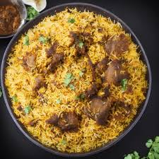

Mutton Biryani

Ingredients :
- Mutton
- Rice
- Onions
- Curd
- Ginger-Garlic Paste
- Spices
- Ghee
Procedure :
- 1 kg (or about 2.2 lbs)
- About 750g to 1 kg
- Sliced and often fried (called birista or fried onions)
- Used for marinating the mutton
- A key flavor base
- Whole spices like cloves, green and black cardamom, cinnamon, and bay leaves. Ground spices include coriander, cumin, red chilli powder, and garam masala.
- Clarified butter, used for frying and added for richness.